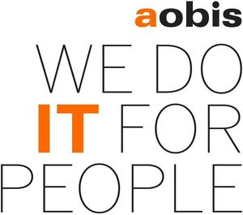

Trade Mark Journal No.2025/014 4 April 2025
WO0000001830841 (9,35,37,38,41,42)
Office of origin: Germany
Date of International Registration:3 September 2024
Date of designation in the UK:
3 September 2024

The mark contains the colours black and orange.
International priority date claimed: 4 March 2024
(Germany)
- Class 9
- Scientific, research, navigation, surveying, photographic, cinematographic, audio visual, optical, weighing, measuring, signalling, detecting, testing, inspecting, life-saving and teaching apparatus and instruments; apparatus and instruments for conducting, switching, transforming, accumulating, regulating or controlling the distribution or use of electricity; apparatus and instruments for recording, transmitting, reproducing or processing sound, data or images; recorded media; downloadable media; computer software; blank digital or analogue recording media and storage media; cash registers; calculating devices; computer and computer peripheral devices, in particular facsimile machines, printers, image scanning apparatus, copiers and multifunctional printers; television apparatus; printers; mobile apps; computer programs [downloadable]; electronic publications [downloadable]; electronic locking systems; integrated circuit cards [smart cards]; card readers; parts and fittings for all the aforesaid goods, included in this class.
- Class 35
- Advertising, marketing and promotional services; business management; administrative services; office functions; conducting, arranging and organizing of exhibitions and trade fairs for business, commercial or advertising purposes; business assistance, namely controlling and processing of orders for third parties; business management and organization consultancy, in particular development of business concepts; business consultancy and advisory services; business management consultancy; professional business consultancy; arranging of business introductions; arranging of commercial and business contacts, also via the internet; business management analysis, research and information services; maintenance and compilation of data and information in computer databases; systemization of information into computer databases; compilation of statistics; human resources management and recruitment services; placement of staff; personnel selection [for others]; commercial administration of the licensing of the goods and services of others; organising and conducting of exhibitions or events for commercial or advertising purposes; import-export agency services; wholesale and retail services, including via the internet, in relation to compact discs, DVDs and other digital recording media, apparatus and instruments for recording, transmission, reproduction or processing of sound, data or images, data processing equipment, software, facsimile machines, printers, image scanning apparatus, copiers and multifunctional printers, television apparatus, computer peripheral devices, teleprocessing apparatus and instruments, wireless communications apparatus and systems, electronic locking systems, integrated circuit cards [smart cards], card readers, fittings for all the aforesaid goods; rental and leasing of objects in connection with providing the aforesaid services, included in this class, in particular rental of office equipment, office machines and equipment, photocopiers, printers, multifunctional printers and electronic locking systems, integrated circuit cards [smart cards], card readers; consultancy and information in relation to the aforesaid services, included in this class.
- Class 37
- Installation, repair and maintenance of computers, networks, data systems and computer peripherals; consultancy relating to installation, maintenance and repair of computer hardware, telecommunications hardware and/or computer peripherals.
- Class 38
- Telecommunication services; providing access to content, web pages and internet portals for third parties; information services provided via the Internet, namely transmission of messages, reports, data, images and documents; networking services, namely providing access to computer software for the information technology relating business and private network as well as for the establishing and arranging of private and business introductions; providing access to an interactive platform enabling exchange of information; transfer of data by telecommunications; information about telecommunication; providing access to a computer network, in particular the internet; providing information relating to telecommunication; technical editing of video, audio and data signals [for transmission]; internet telephony services; providing access to platforms on the internet; providing online forums and internet chatrooms; electronic communication by means of chatrooms, chat lines and internet forums; live transmissions accessible via home pages on the internet [webcam]; peer-to-peer services for the joint use of documents and photographs; providing access to internet telephony [VoIP] [Voice over Internet Protocol]; providing access to internet and peer-to-peer communication; communications services relating to VoIP [internet telephony], SIP [Session Initiation Protocol], PBX [private branch exchanges] and UC [Unified Communications]; internet telephony and videoconferencing services; providing access to and leasing of access time to computer networks; rental of objects in connection with the provision of the aforesaid services, in particular rental of telecommunication and video conferencing facilities, data transmission apparatus and instruments, wireless communications apparatus and systems, facsimile machines, electronic mail-boxes and local area networks; consultancy and information in relation to the aforesaid services.
- Class 41
- Education; providing of training; entertainment; sporting activities; cultural activities; training and further training consultancy; arranging and conducting of training courses; arranging and conducting of meetings in the field of education; arranging, conducting and organization of cultural and sporting activities, conferences, congresses, concerts, symposiums, seminars, training courses, classes and lectures; team building (education); training of personnel; personnel training; conducting of executive personnel training; provision of training courses for executive personnel; coaching; publishing and reporting; publication of printed matter, journals, magazines and books as well as educational and information materials, also in electronic format and/or on the internet; provision and rental of objects in connection with providing the aforesaid services, included in this class; consultancy and information in relation to the aforesaid services, included in this class.
- Class 42
- Scientific and technological services and research and design relating thereto; industrial analysis and research services; design and development of computer hardware; IT services; software design; software development; installation of computer software; software implementation; updating and maintenance of software; hosting services; software as a service [SaaS]; rental of software [also downloadable]; workplace as a service [WaaS]; infrastructure as a service [IaaS]; rental of computer hardware and systems, computer peripherals as well as parts and fittings for all the aforesaid goods; data duplication and conversion services; data coding services being computer programming; computer analysis and diagnostics; computer project management; data mining; computer network services; data migration services; providing non-downloadable computer software for temporary use to transfer, receive, view, store, organise and/or share its use also via the internet, with other users of electronically stored documents; providing software via a global computer network; technical IT safety services, in particular technical advice relating to IT-related safety computer services for protection against spyware and spam; testing, authenticating and quality control; electronic storage of data and documents for others; graphic design services; designing and developing webpages on the internet; providing information on the topics of IT security, IT systems and IT use on platforms on the Internet; consultancy and information in relation to the aforesaid services, included in this class.
Tegarin GmbH
Representative: Beckord & Niedlich Patentanwälte PartG mbB, Marktplatz 17, 83607 Holzkirchen, GERMANY